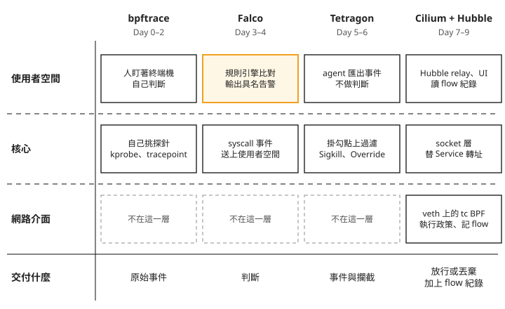
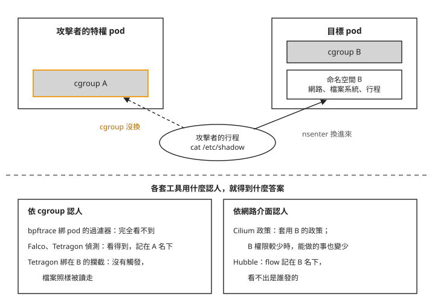
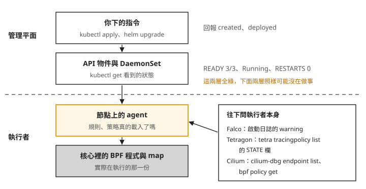

Day 10: Sprint 2 總結——bpftrace、Falco、Tetragon、Cilium 與 Hubble 各看得到什麼、擋得住什麼¶


假設你負責的叢集出了一件事：一顆有特權的 pod 被入侵，攻擊者沒有直接在那顆 pod 裡動手，而是用 nsenter 鑽進隔壁另一顆 pod，讀走它的 /etc/shadow，再從網路送出去。事後檢討時有人問：「前面試過的那幾套工具，該裝哪一套？哪一套抓得到這件事，哪一套擋得住？」
這個攻擊在這個 sprint 裡做過好幾次：Day 2 對 bpftrace、Day 3 對 Falco、Day 5 和 Day 6 對 Tetragon、Day 8 對 Cilium、Day 9 對 Hubble，每一次的答案都不一樣。這一章不開新的 lab，把四套工具放在同一個問題前面比較。讀完之後，拿到一個需求（要診斷、要告警、要擋，還是要管誰能連誰），你能說出該交給哪一套，也能從那套工具掛在哪裡，推出它會漏掉哪一種攻擊。
走完之後：四套工具掛在不同的位置¶
Day 0 開場的問題是「eBPF 是什麼」，答案是核心多了一套受控的擴充介面：程式送進核心之前，先由 verifier 逐條檢查，通過之後掛到某個位置上執行。後面九天的四套工具都建立在這件事上，差別在於各自把程式掛在哪裡，以及掛上去之後把結果交給誰。
下面這張圖由上往下分成三層：使用者空間（一般程式跑的地方）、核心，以及 pod 的網路介面。四個欄位是四套工具，每一格寫它在那一層做什麼，虛線框表示那一層它沒有東西。最下面一列是它最後交到你手上的東西。

我們可以從圖上看到兩件事：
- 只有 Falco 交付判斷。 它的事件來自核心，但比對規則、決定「這是一件壞事、嚴重度多少」是在使用者空間做的。告警帶著規則名與嚴重度，值班的人可以直接據此處理。其他三套交出來的東西，都要人再判斷一次。
- 會動手擋的有兩處，都在核心裡。 Tetragon 在掛勾點上殺掉行程（
Sigkill），或讓那一次操作回傳錯誤（Override）；Cilium 在 pod 的網路介面上丟掉封包。這個網路介面是 veth，也就是 pod 連到節點的那條虛擬網路線；Cilium 在上面掛的是 tc BPF，即掛在 Linux 流量控制層的 eBPF 程式。一個擋行程的動作，一個擋連線。
回頭看 Sprint 開始的時候：核心事件裡只有 pid 和執行檔名稱，說不出事件屬於哪顆 pod；偵測要靠人盯著終端機；Service 背後怎麼轉址也看不到。走完十天，事件可以對回 pod、namespace 與映像；偵測可以交給常駐的規則引擎；攔截也做得到，而且量過「在操作前擋住」和「事後把行程殺掉」的差別；每套工具佔多少 CPU 與記憶體、改一條規則要多久，都有實測數字。
同一個攻擊，四套工具的答案¶
開場那個攻擊之所以值得拿來比較，是因為它剛好卡在各套工具認身分的方式中間。先複習 Day 2 講過的事：nsenter 讓一個行程換進另一顆 pod 的命名空間（網路、檔案系統掛載、行程編號這幾種隔離），但不會換掉它的 cgroup。cgroup 是核心替行程分組、計算資源用的那一層，也是這幾套工具把事件對回 pod 的依據。
下面這張圖上半部是攻擊發生時的樣子，下半部依「工具用什麼認人」分成兩組，列出各自的結果。

先看左邊那一組。
依 cgroup 認人的工具，答案都跟著 cgroup A 走。 Day 2 的 bpftrace 過濾器綁在目標 pod 的 cgroup 上，攻擊者的行程不在那個 cgroup 裡，所以完全看不到（見 Day 2 的疑難排解）。Falco 與 Tetragon 都對整顆節點開著探針，看得到這次讀取，卻都把它記在攻擊者那顆 pod 名下。兩者記身分的方法差很多：Falco 在使用者空間事後拿 cgroup 去問容器執行期，Tetragon 在 execve 發生的當下就由 BPF 程式把 cgroup id 寫進 map。結果卻一樣，因為核心事件裡只有 cgroup，「這是哪顆 pod」是從 cgroup 推出來的（見 Day 3 與 Day 5 的疑難排解：Falco、Tetragon）。
影響最大的是 Tetragon 的攔截。Day 6 用 TracingPolicyNamespaced 保護一個命名空間裡的 /etc/shadow，這種策略選中的是那個命名空間裡各個 pod 的 cgroup。攻擊者從另一個命名空間的特權 pod 鑽進來，它的 cgroup 不在策略範圍裡：cat 正常結束，讀走 502 位元組，一筆攔截事件都沒有（Day 6 的步驟 4）。
再看右邊那一組。
依網路介面認人的工具，答案跟著命名空間 B 走。 Cilium 的政策掛在 pod 的 veth 上，而 veth 屬於網路命名空間。攻擊者換進 B 的網路命名空間，封包就從 B 的 veth 出去，套用的是 B 的政策，連 identity 都是 B 的。所以這一招在 Cilium 上繞不過去：B 的權限比攻擊者原本那顆 pod 少的時候，鑽進去之後能做的事反而更少（見 Day 8 的疑難排解）。代價在紀錄那一側：Hubble 記下的那條 flow，跟 B 自己發出的請求逐欄相同，flow 裡沒有任何行程、PID 或 cgroup 欄位，事故報告會寫成是 B 發的（Day 9 的探針 B）。
把兩組答案放在一起，可以推出三件事：
- 在核心裡記錄，不會讓 pod 歸屬變準。 pod 是 Kubernetes 的概念，核心只知道 pid、命名空間和 cgroup。只要身分是從 cgroup 推出來的，記得再早，記到的都是發起者的 cgroup。
- 一套工具擋得住的範圍，等於它的執行點能圈出的範圍。 執行點指工具真正掛上程式、做出判定的位置。Tetragon 的攔截圈的是 cgroup，攻擊者的 cgroup 不在範圍內就擋不到；Cilium 的政策圈的是網路命名空間，換進去反而被圈住。兩個結果都是照設計運作。
- 觀察範圍比攔截範圍大，中間那一塊就是攻擊者能走的路。 Day 6 那次繞過，Falco 報了告警，Tetragon 自己的底層事件也把
nsenter連同參數逐行記了下來，只有攔截沒有觸發。同一套 Tetragon，對整顆節點都看得到，卻只對策略綁定的 cgroup 擋得住。如果只裝攔截、不留偵測，那次攻擊成功了也不會有任何人知道。
所以要知道一套工具的盲點，先問它的執行點在哪、它用什麼認人。下一節選工具時，這個問題會一直用到。
真的要做的時候：先問你要回答什麼問題¶
四套工具回答的是四種不同的問題。拿到一個需求，先分清楚它屬於哪一種，再看那一套的代價你付不付得起。
正在出事，要知道這一刻發生什麼：bpftrace¶
bpftrace 不常駐，要用的時候才開，不用的時候成本是零。它適合診斷一個正在發生、而且你大概知道該往哪裡看的問題，例如哪支程式在開這個檔、哪個行程在往外連。它要你剛好在看：探針要先掛好才有資料，掛上去之前發生的事完全不存在，想看容器啟動時做了什麼，還得刻意讓容器重啟一次（Day 2）。
探針掛在哪裡也決定了它有多貴。Day 0 有一支程式通過了 verifier 的檢查，只因為掛在每次 syscall 都會命中的位置，就讓受測的程式慢了 57%（Day 0）。所以 bpftrace 適合拿來診斷，不適合當常駐的防線。
已知的壞事發生時，要有人收到告警：Falco¶
Falco 常駐在每顆節點上，把 syscall 事件拿去比對規則，輸出帶規則名、嚴重度與 MITRE 分類的告警。MITRE 分類指的是對應到 MITRE ATT&CK 攻擊技法清單的編號，例如讀敏感檔對應 T1555。Day 5 讓 Falco 與 Tetragon 同時看同一批四個可疑動作，Falco 報了 6 筆，Tetragon 匯出了 78 筆。Falco 那 6 筆每一筆都對得回一個動作，不需要人再篩一次。
它的限制是沒寫規則的事一律看不見。預設只載入 stable 等級的規則，總共 25 條（Day 3 的「確信該報的動作，Falco 沒報」），其中沒有一條在管新的對外連線（Day 3 的「從容器連到沒連過的位址，Falco 沒報」）。自己補規則之後要調誤報，而調校一定會讓出一部分偵測力：Day 4 把每分鐘 180 筆誤報調到 0，代價是對 CoreDNS 和一個被豁免的 Service 開了兩條不會觸發告警的外送路徑（Day 4 的「這兩條例外放行了什麼」）。調完要把讓出去的部分寫進例外的名字裡，之後定期回頭檢查。
另外，用 chart 部署時，改一條規則會讓整個 DaemonSet 滾動更新一次。三顆節點量到 71 秒，每顆節點輪到時有數十秒沒有監控，所以規則變更要當成一次部署來排時間，不要在處理事故的中途改（Day 4 的「只改規則內容，整個 DaemonSet 也重啟一遍」）。
某個動作絕對不能發生：Tetragon¶
Tetragon 的攔截回答的是「這個動作不准發生」。範圍圈得清楚的地方最適合用它，例如一個成分固定的工作負載命名空間，只允許清單上的執行檔啟動。Day 6 量過它真的擋得住：策略掛在 security_file_permission 上，這是讀取之前的權限檢查，就算把讀檔和送出壓進同一個 sendfile 呼叫，機密也一個位元組都送不出去。決定擋不擋得住的是掛勾點在操作之前還是之後；官方文件也提醒，送出訊號（Sigkill 是其中一種）不保證能阻止每一種操作，建議 Signal 配 Override 併用（Day 6 的步驟 3）。所以挑掛勾點時，選在操作發生之前的權限檢查。
決定用它之前，要先想清楚三件事：
- 攔截只保證這一個動作沒有發生。 Day 6 的攻擊者被擋了五次，只是少了五個行程，換一個路徑就繼續。要有人去處理這個攻擊者，得靠偵測那一側的告警。
- 範圍圈不清楚的地方擋不住。 上一節的
nsenter就是例子：只要有人能在節點上建立特權 pod 鑽進來，命名空間範圍的策略就守不住。Day 6 的結論是這個洞要在 admission 層補，也就是 API server 決定誰能建立特權、hostPIDpod 的那一關。 - 寫錯的代價是應用壞掉，而且很安靜。 Day 6 從允許清單拿掉一支
head，工作負載有 82 秒輸出全錯，pod 一直是1/1 Running、零重啟、沒有新事件（Day 6 的步驟 5）。好的一面是 Tetragon 的策略變更在 2 秒內生效，不重啟任何東西，寫錯了可以馬上拿掉。
誰可以跟誰連線：Cilium 與 Hubble¶
Cilium 回答的是「誰可以跟誰講話」，而且能細到 HTTP 方法，例如同一個服務允許 GET、拒絕 POST。它是四套裡唯一 nsenter 繞不過的執行點，但它的紀錄裡沒有行程，說不出連線是哪支程式發的。
寫政策時有兩個行為要先知道。第一，多條政策取聯集，只會越加越寬。在一條「同命名空間全放行」上面再疊一條「只放行 8080」，9090 照樣通，要收緊只能改掉或刪掉那條寬的（Day 8 的「加了一條更窄的規則，流量沒有變少」）。第二，一條無效的政策是 fail-open，也就是失效時流量照常放行：kubectl apply 回 created，政策其實沒有生效，流量完全沒變（Day 8 的「ingress: [] 套上去成功，流量卻完全沒變」）。
另外，hostNetwork: true 的 pod 直接用節點的網路，不經過任何 pod 的 veth。本課環境保留本機 host 到 endpoint 的預設放行，所以能建立 hostNetwork pod 的人，可以連到同節點上受本課政策保護的目標（Day 8 的「同節點的 hostNetwork pod 仍能連到受限服務」）。這種流量在 Hubble 上的來源只有 reserved:host（Cilium 用來代表節點本身的身分），看起來跟 Cilium 自己的 Envoy（Day 8 用來執行 L7 政策的代理程式）轉發的流量一模一樣，本課用來「找違規」的過濾條件都濾不出來（Day 9 的探針 C）。
Hubble 是看這些流量的工具。它的資料來自每顆節點上 Cilium agent 的環狀緩衝區，滿了就覆蓋最舊的，Day 9 量到的歷史只有兩三分鐘，所以預設設定下沒辦法事後回頭查（Day 9 的「UI 的 flow 表是空的，或找不到幾分鐘前的事件」）。要把 flow 存起來，得先處理另一件事：走 L7 政策的請求，flow 裡會有 HTTP 標頭的原文，包括 Authorization 和 Cookie（Day 9 的「flow 裡看得到 Authorization 的原文」）。
偵測和攔截要一起上¶
最常被問的是「有了攔截，還需要偵測嗎」。兩邊都不能拿掉。攔截不能取代偵測，因為它的範圍比較小，上一節那次繞過只有偵測看到；偵測不能取代攔截，因為告警不會讓 read() 失敗。Day 6 驗收的那一次違規，Falco 的告警和 Tetragon 的攔截在同一毫秒發生，一邊留下一筆有名字的紀錄，一邊讓那個動作沒有完成。
疑難排解¶
這一節收的是好幾章都遇到過的兩種狀況。
指令回報成功，工具卻沒有在做事¶
kubectl apply 回 created、helm upgrade 回 deployed、DaemonSet 顯示 READY 3/3、pod 是 Running，工具卻沒有照你以為的方式運作。檢查時可以分成三類。
第一類是 DaemonSet 或 pod 看起來正常，節點上的 agent 卻沒在工作。Day 3 有一顆 Falco 被搶占，重新排回來之前那顆節點沒有監控，DaemonSet 卻一直顯示 READY 3/3；Day 6 的 Tetragon agent 冷啟動時退出過一次，pod 仍是 Running，RESTARTS 只多了一個 1，那段時間節點上沒有任何攔截（見 Day 3、Day 6 的疑難排解）。
第二類是設定送進去了，政策卻沒有生效。Day 8 的 CiliumNetworkPolicy 回 created，政策無效，流量照常放行（見 Day 8 的疑難排解）。套用後仍要檢查工具的載入狀態，查詢方式見下方。
第三類是工具照設計運作，應用卻壞了。Day 6 那條少了 head 的允許清單，讓應用的 pod 在 1/1 Running、零重啟、沒有新事件的狀態下輸出錯了 82 秒（Day 6 的步驟 5）。
原因都一樣：這些回傳值和狀態來自管理平面，也就是 API server 上的物件和 DaemonSet 的計數，只代表指令被接受、pod 有在跑。規則或策略有沒有真的載入，要查節點上的 agent 日誌、策略狀態與核心裡的 BPF policy map。下面這張圖由上往下是一個設定從你下指令到真正執行會經過的四層。

照著圖上的虛線看，驗收要問虛線以下的執行者。下面的指令都在前幾章跑過，<tetragon-pod>、<endpoint-id>、<ns> 換成你自己叢集裡的值：pod 名稱用 kubectl -n tetragon get pods 查，endpoint id 是 cilium-dbg endpoint list 第一欄的數字。
Falco 看 pod 的啟動日誌，必須看到 Loading rules from: 與預期載入的規則檔，而且不能有 warning 區塊；空輸出不算通過。下方保留原查詢指令，但帶 -l selector 時預設只取最後十行，可能漏掉規則載入段。正確寫法是在 -c falco 後、管線 | 前加上 --tail=-1，讀取所有可取得的日誌；修正後的寫法本課沒有實跑。參數行為見 kubectl logs 官方文件。
kubectl -n falco logs -l app.kubernetes.io/name=falco -c falco | sed -n '/Loading rules from/,/syscall buffer/p'
Tetragon 看 STATE 欄要是 enabled；若是 load_error，代表策略載入失敗，要查 agent 日誌。冷啟動之後，再確認 RESTARTS 與 agent 日誌裡有沒有 Loading sensor name=__base__：
Cilium 用 endpoint list 看各 endpoint 的政策是否在執行，用 bpf policy get 看那顆 endpoint 每條規則的命中計數；CiliumNetworkPolicy 本身則看 VALID 欄是不是 True：
kubectl -n kube-system exec ds/cilium -c cilium-agent -- cilium-dbg endpoint list
kubectl -n kube-system exec ds/cilium -c cilium-agent -- cilium-dbg bpf policy get <endpoint-id>
kubectl get cnp -n <ns>
ds/cilium 會挑 DaemonSet 裡的其中一顆 pod，節點不只一顆時，要改用該節點上的 cilium pod 名稱。
監控元件被擠掉或掛掉，沒有任何指標會叫¶
四套工具的 chart 裡，只有 Cilium 的 agent 與 cilium-envoy 設了 priorityClassName（system-node-critical）。Cilium agent 停止會影響政策更新等管理功能，但不代表整顆節點立即斷網：持久保留在 BPF 檔案系統中的 eBPF 資源，可讓既有資料平面在 agent 重啟或升級期間繼續運作（見 Cilium 官方文件）。其他元件的 priority 都是 0，在滿載的節點上，排程器要騰出空間時最先被搶占的就是它們。沒設 resources 的那幾個還是 BestEffort，節點記憶體不夠時最先被 OOM 結束。被擠掉的時候，各自的後果不同：
- Falco：那顆節點少看到事件，DaemonSet 照樣顯示
READY 3/3（Day 3 的「Falco pod 被搶佔，DaemonSet 卻顯示全部就緒」）。它的 requests 是100m/512Mi，實際只用十幾到二十幾 m 的 CPU，在小節點上更容易排不進去（Day 3 的「節點的 CPU 實際用量不高，Falco 卻排不進去」）。 - Falcosidekick：事件照抓，但告警送不出去，Falco 這一側全部正常（Day 4 的「sidekick 預設兩份副本、不給 resources，還會擠在同一顆節點」）。
- Tetragon agent：BPF 程式留在核心裡繼續跑，沒有人讀事件；如果掛著攔截策略，行程照樣被殺，紀錄卻一筆都沒有（Day 6 的「agent 是 BestEffort，現在身上掛著會殺行程的策略」）。
- Hubble relay 與 UI：看不到流量。它們是 priority 0 加 BestEffort，節點吃緊時會先被擠掉，而節點吃緊時往往也是需要查流量的時候。
這些元件本身的用量不大，但要算進節點容量。課程裡量到的數字：Falco 每節點約 14–24m CPU、84–90Mi 記憶體；Tetragon 只監看時 5–11m、83–120Mi，掛上攔截策略後是 16–34m、164–224Mi；Cilium agent 做完 Day 8 的政策實驗後約 216Mi；Hubble relay 與 UI 兩顆合計 11m、48Mi。
修法是部署時自己補上 resources 與 priorityClassName，requests 照實測用量設，不要沿用 chart 的預設值。Cilium agent 也要檢查：它的 Burstable 來自一個 init container 的 requests，記憶體 request 只有 10Mi，實測是 102Mi，排程器會少算這一段（Day 7 的「cilium pod 是 Burstable，記憶體 request 卻只有 10Mi」）。提高 priority 只決定誰先被搶占，不會讓節點多出 CPU；節點本身太小，就要換大一點的節點。
這門課沒教的¶
Falco 的 k8saudit。 Falco 除了 syscall，還能讀 Kubernetes 的稽核日誌，例如誰建了特權 pod。AKS 這類受管叢集沒有節點上的稽核日誌，官方在 AKS 上的做法要另外接 Event Hub 與 Storage Account，而且要一直開著，所以課程只教 syscall 規則。
Falco 的 incubating 與 sandbox 規則。 Day 3 量到預設只有 stable 的 25 條。官方規則庫另外有 incubating 與 sandbox 兩級，要自己裝。裝上之後重跑一次 Day 3 的閒置量測，就能知道多出來的規則在你的工作負載上會產生多少告警。
Falcosidekick 的 Web UI。 它讓你在瀏覽器裡查看告警列表，啟用時會另外建立 Redis 與 UI 的 Deployment。需要用網頁瀏覽告警時，可以評估加入這個介面，並把兩個元件算進部署與容量規劃；本課沒有部署 Web UI。
Cilium 的 ingressDeny／egressDeny。 前面講過多條政策取聯集，只會越加越寬。Cilium 有一組 deny 規則，可以表達「即使有其他政策允許也要擋」，課程沒有測。寫法見 Cilium 官方文件的網路政策章節。
Tetragon 的 Signal 配 Override。 這是官方對「要確保操作不完成」建議的寫法，課程分別測了兩個動作，沒有測併用。Day 6 的結論只涵蓋掛在操作之前的檢查點；掛在其他位置時，照官方建議併用兩個動作。
host 網路政策。 本課保留本機 host 的預設放行，hostNetwork pod 因而能連到同節點上受本課政策保護的目標。要限制這條路徑，先限制誰能建立 hostNetwork pod：Kubernetes 內建的 Pod Security 標準裡，Baseline 等級就不允許 hostNetwork，一般工作負載的命名空間可以套用它，真正需要 hostNetwork 的系統元件另外放行。接著依流量路徑評估政策：本機 host 到 endpoint 的預設放行由 --allow-localhost=policy 交給 endpoint 政策控制；主機網路流量則另行評估 host firewall，也就是針對節點本身網路流量的防火牆。這類叢集範圍政策用 nodeSelector 按節點標籤選出要套用的節點。兩種設定不能混為一談，可分別閱讀本機 host 與 endpoint 的政策與 Host Policies；本課未驗證改動後的連通性或 Hubble 紀錄。
DNS 查詢限制。 FQDN 政策是用網域名稱寫的對外連線規則，但限制連線目的地不等於限制 DNS 查詢。本課政策不允許連線的網域名稱，仍可透過 DNS 解析（Day 8 的「被擋掉的網域照樣查得到、進了快取」）。若要限制可查詢的名稱，還要把 DNS 比對樣式收成明確清單。可從官方的 DNS 政策說明閱讀 toFQDNs 與 rules.dns 的分工；本課未驗證收緊查詢清單後的行為。
Hubble flow 保存。 需要事後查詢流量時，要把 flow 匯出並保存。Hubble exporter 是將 flow 寫成日誌的元件，可再由日誌收集系統送往儲存服務，設定入口見 Configuring Hubble exporter。保存前也要處理前面提到的 HTTP 敏感標頭。本課沒有匯出到儲存，所以可保存多久、儲存成本多少，都沒有實測答案。
規模與長時間運行。 Day 8、Day 9 是單節點，所以 Hubble relay 最主要的功能，也就是跨節點彙整，等於沒有測；規則與政策的數量也都在個位數，規則變多之後成本怎麼成長還看不出來。最長的連續攔截只跑了十幾分鐘，記憶體隨時間的變化只觀察了幾小時。延遲方面，Day 7 換掉 kube-proxy 之後的延遲改善沒有可信的結論（負載不對等，雜訊大於差距），Day 8 的 L7 政策成本則量得出來（Day 8 步驟 6）。
不重建叢集的 eBPF 資料平面。 Day 7 為了自己管 Cilium 新建了一座叢集，因為 AKS 的 --network-plugin none 只能在建立時指定。如果你的叢集不能重建，Calico 的 eBPF 資料平面可以在既有叢集上啟用，同樣能取代 kube-proxy，可以拿來和 Day 7 的做法對照。
把行程和連線對起來。 Hubble 說不出一條 flow 是哪個行程發的，Tetragon 說得出，但這兩份資料在四套工具裡沒有地方會合。要回答「這條被擋的連線是哪支程式發的」，得自己用時間與來源、目的位址和埠，把 Tetragon 的行程事件和 Hubble 的 flow 對起來。課程沒有做這個整合。
想一想¶
- 一個團隊說：「我們已經用 Tetragon 的命名空間策略把
payments命名空間裡讀/etc/shadow的動作都擋掉了，Falco 可以拿掉省資源。」叢集裡有其他團隊能建立特權、hostPID的 pod。你會怎麼回答？如果拿掉 Falco，Day 6 那次繞過會留下什麼紀錄？ - 事故報告寫：「Hubble 顯示這條被 L7 政策拒絕的 POST 來自
netlab/client，所以client的程式有問題。」在下這個結論之前，你還需要排除哪一種可能？要排除它，該去看哪一套工具的資料？ - 同事在一個多人共用的命名空間套了一條只放行 8080 的 CiliumNetworkPolicy，
kubectl apply回created，他說好了。你會請他再確認哪兩件事，才能確定 9090 真的被擋住？
小結¶
這個 sprint 的四套工具，差別在它們把程式掛在哪裡、用什麼認人，以及最後交出什麼：bpftrace 交原始事件給正在看的人，適合診斷；Falco 在使用者空間比對規則，交出有名字的告警；Tetragon 在核心的掛勾點上過濾，能在操作發生前把它擋下；Cilium 在 pod 的網路介面上決定誰能連誰，Hubble 讓你看到這些連線。行程執行 nsenter 後，依 cgroup 判定事件歸屬的工具仍會將事件歸在原 cgroup；若行程不在攔截策略的範圍內，就不受該策略攔截。依網路介面套用的政策仍會限制經過該介面的連線，但 Hubble 的 flow 說不出是哪個行程發起。之後遇到一套新的執行期安全或網路工具，先問它的執行點在哪裡，就能推出它的盲點；裝好之後，記得去問節點上的執行者，而不是只看 kubectl 的回傳。
延伸閱讀¶
想再深入，可以從這幾份開始：
- Tetragon 的強制執行機制 —— 覆寫回傳值與送出訊號兩種做法的官方說明，包含「SIGKILL 不保證阻止操作」的警告與
Signal配Override的建議。 - 本機 host 與 endpoint 的政策 —— 本機來源的預設放行與 allow-localhost 設定。
- Host Policies —— 主機網路流量的政策選取範圍，與前一份的 endpoint 政策分開評估。
- Falco 預設規則清單與成熟度分級 —— 預設只載入 stable 規則，incubating 與 sandbox 要另外安裝；這裡列出每一級有哪些規則。
- Calico 啟用 eBPF 資料平面 —— 在既有叢集上切換到 eBPF 資料平面、取代 kube-proxy 的步驟（連結為 latest 版）。
下一步¶
Sprint 2 到這裡結束。四套工具都在處理同一件事：容器在節點上實際做了什麼、能不能管住它。
下一個 sprint 換一個方向，看另一種執行單位：WebAssembly。Sprint 3 從它是什麼、它的能力沙箱怎麼限制程式能碰的東西，以及 Kubernetes 怎麼執行它開始。Sprint 3 Day 0
eBPF 標誌為 eBPF 專案之官方資產,此處作社群教學用途。